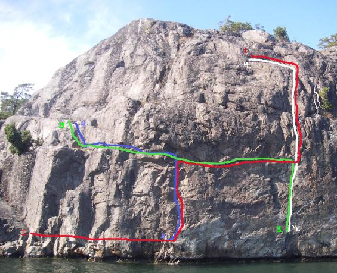

Lilla Gässholmen
Allmänt
Fin DWS klättring i svårighetsgrad kring 6a. Man måste ha båt för att ta sig till området.
Vägbeskrivning
Med båt
Leder

- 1
- Där hittar Erik en "liten" vila
- 6b, S0
- Tyngst i början längs vattnet, Uppför Bakis i Vasastan och sedan traversera sprickan till höger.
- 2
- Bakis i Vasastan
- 6a, S0
-
- 3
- Tisko Tansi
- 6a+, S0
- Startar uppför Fiskmåsen och sedan travers åt vänster strax under sprickan.
- 4
- Fiskmåsen
- 6a, S0
- Startar i den högra av två tunna sprickor.Vattendjup som en kanotpaddel;2-2,2m. Ta i beaktande, jag är tveksam till hur ett fall högt uppifrån skulle sluta./Tobias augusti2009
Kategori:DWS
Kategori:vertikalt
Kategori:Stockholm
Kategori:Nacka-Värmdö
Kategori:Stockholms Skärgård
Copyright (C) Permission is granted to copy, distribute and/or modify this document under the terms of the GNU Free Documentation License, Version 1.3